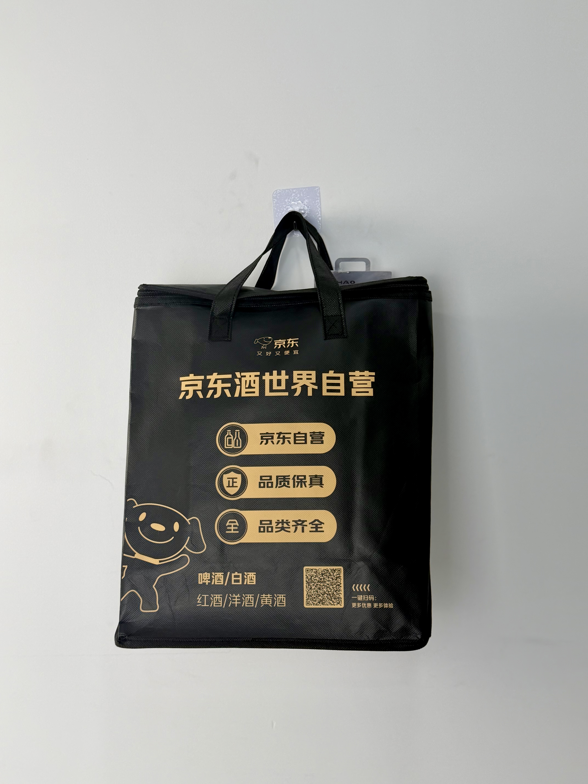

A premium black insulated tote designed for JD.com's liquor division, featuring gold foil branding, QR-code integration, and zip-top closure that elevates alcohol delivery into a premium unboxing experience.

JD Liquor World is the alcohol e-commerce division of JD.com, China's second-largest online retailer. Operating under strict regulatory requirements for alcohol sales and delivery, the platform offers beer, baijiu, wine, spirits, and yellow rice wine through both direct-to-consumer shipping and same-day local delivery. With average order values significantly higher than standard FMCG, JD Liquor World recognized that packaging quality directly influenced customer perception of product authenticity and value.
When a customer spends 500 RMB on a bottle of Moutai, the bag it arrives in needs to feel worthy of that investment. Cheap packaging creates doubt about product authenticity.
The project brief demanded a carrier that addressed three simultaneous challenges: thermal insulation for temperature-sensitive wines, structural protection for glass bottles, and brand communication that reinforced JD's "authentic products, trusted platform" positioning. The solution also needed to integrate digital functionality through QR-code connectivity.
The creative direction drew from luxury retail packaging conventions rather than standard delivery bags. The deep black field with gold foil accents creates immediate associations with premium spirits and fine wine. The JD mascot — normally rendered in the brand's corporate red — appears here in elegant gold line art, signaling that this is a special-occasion delivery experience.
Color combination universally associated with luxury spirits, elevating perceived value of delivered products.
Three gold trust badges — JD Direct, Authentic Quality, Full Range — communicate purchase confidence at delivery moment.
Scannable code links to repurchase portal, turning delivery bag into a direct-response marketing channel.
Nylon coil zipper provides tamper-evident closure that protects high-value bottles and signals premium handling.
Alcohol delivery packaging must address unique requirements: temperature stability for wine, structural protection for glass, regulatory compliance for sealed delivery, and brand presentation worthy of luxury products. The JD Liquor World tote was engineered specifically for these multi-dimensional demands.
| Parameter | Specification | Test Standard |
|---|---|---|
| Thermal Retention | > 18°C for 45 min (35°C ambient) | Internal Protocol |
| Load Capacity | 8 kg | ASTM D5265 |
| Drop Test | 1.2m, 3 bottles, zero breakage | ISTA 3A |
| Zipper Durability | > 1,000 cycles | ASTM D2061 |
Premium alcohol packaging demands exacting production standards. The six-stage workflow incorporated specialized processes for foil stamping, foam lamination, and zipper integration rarely required in standard food-delivery bag manufacturing.
Black 120gsm non-woven PP laminated with matte BOPP film for smooth surface preparation prior to foil stamping.
Hot-foil transfer at 150°C with copper die. Multi-stage registration ensures alignment of logo, badges, mascot, and QR code.
5mm EPE foam bonded to aluminum-PE barrier. Heat-compression lamination at 4kg/cm for permanent insulation sandwich.
Ultrasonic die-cutting for sealed edges. Zipper track channel precision-cut for clean insertion.
#5 nylon coil zipper sewn into reinforced top channel. Double-needle stitching at 8 SPI throughout body assembly.
100% foil adhesion test, zipper function check, and thermal probe sampling. Individually poly-bagged for dust protection.
The thermal tote was introduced as the standard delivery carrier for JD Liquor World's same-day delivery service in tier-1 cities, replacing generic courier bags for all orders above 200 RMB. The rollout coincided with the Mid-Autumn Festival and National Day gift-giving season — peak periods for premium alcohol sales.
Key Insight: QR-code scan data revealed that 23% of recipients scanned the bag's code within 48 hours of delivery, generating direct traffic to the repurchase portal. The bag effectively became a zero-cost customer retention channel with measurable ROI.
The premium presentation created significant social sharing during the gift-giving season. Customers frequently photographed the black-and-gold bag alongside opened bottles, generating organic brand content that JD's marketing team repurposed for subsequent campaign creative. The packaging design had effectively created its own advertising assets.
Three design decisions differentiate this alcohol delivery bag from standard e-commerce packaging. Each addresses a specific psychological or logistical challenge in premium spirits delivery.
In China's alcohol market, counterfeit products are a major consumer concern. The gold foil finish subconsciously signals "genuine luxury product" through associations with official gift packaging, reducing purchase anxiety even for repeat customers.
Unlike open-top delivery bags, the zippered closure provides implicit tamper evidence. Customers can verify that their high-value bottles have not been accessed during transport — a critical trust factor for alcohol e-commerce.
Chinese summers regularly exceed 35°C, temperatures that can irreversibly damage wine within 20 minutes. The 5mm EPE foam maintains bottle temperature within acceptable ranges for 45 minutes — covering virtually all same-day delivery windows.
We manufacture thermal delivery bags for luxury e-commerce, alcohol platforms, and premium retail brands. From foil stamping to QR integration, we deliver packaging that matches your product value.